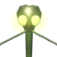

Trofeer
Trofeer i Valheim – 67 gjenstander med biom, funnsted, nødvendig verktøy, oppskrift og bruk.
Ingen gjenstand funnet.
 Asksvintrofé
Asksvintrofé
Ikke la deg lure av det vennlige smilet, den kunne lett ha bitt av deg armen.
Slik får du den
- Slippes av: Asksvin · Askelandet · 10 % sjanse
Brukes til
- Byggemateriale til: Fjærkrans
 Barka Trophy
Barka Trophy
The frozen head of a once-living tree.
Slik får du den
- Slippes av: Barka · Norddjupet · 10 % sjanse
 Beinhoggtrofé
Beinhoggtrofé
En hodeskalle lagd av tjukt bein, beskytter like godt som den skader.
Slik får du den
- Slippes av: Beinhogg · Askelandet · 33 % sjanse
 Beinmassens trofé
Beinmassens trofé
Bein og seig gugge, holdt sammen av en usynlig kraft. Gi det til Offersteinen.
Slik får du den
- Slippes av: Beinmassen · Sump
 Bjørnetrofé
Bjørnetrofé
Det blikket er fortsatt skummelt...
Slik får du den
- Slippes av: Bjørn · Svartskog · 10 % sjanse
Brukes til
- Ingrediens i: Bjørnens manke, Bronseanheng
- Byggemateriale til: Bjørneskinnsteppe
 Blobbtrofé
Blobbtrofé
En illeluktende klump av klissete masse.
Slik får du den
- Slippes av: Slump · Sump · 10 % sjanse
- Slippes av: Blobb · Sump · 10 % sjanse
Brukes til
- Ingrediens i: Blobbombe: Elitegift, Blobbombe: Gift
 Blodigletrofé
Blodigletrofé
Huden er slimete, men har et vakkert mønster i rødt og svart.
Slik får du den
- Slippes av: Blodigle · Sump · 10 % sjanse
Brukes til
- Ingrediens i: Jernspenne
 Brennatrofé
Brennatrofé
Brenner enda, på en eller annen måte.
Slik får du den
- Slippes av: Brenna · Svartskog
 Den Eldstes trofé
Den Eldstes trofé
Dette avhogde hodet oser av makt. Gi det til Offersteinen.
Slik får du den
- Slippes av: Den Eldste · Svartskog
 Draketrofé
Draketrofé
Fremdeles kald å ta på.
Slik får du den
- Slippes av: Drake · Fjell · 10 % sjanse
Brukes til
- Ingrediens i: Blobbombe: Frost, Drakehjelm, Frossent agn
 Draugtrofé
Draugtrofé
Dekk til munnen hvis den begynner å hviske om natta...
Slik får du den
- Slippes av: Draug · Eng, Sump · 10 % sjanse
 Dronningas trofé
Dronningas trofé
Hun har sett nok. Gi det til Offersteinen.
Slik får du den
- Slippes av: Dronninga · Tåkeheim
 Dvergtrofé
Dvergtrofé
Det er ærlig talt litt bekymringsverdig at du vil henge dette opp som veggpynt...
Slik får du den
- Slippes av: Dvergtrollmann · Tåkeheim · 5 % sjanse
- Slippes av: Dvergslyngel · Tåkeheim, Askelandet · 5 % sjanse
- Slippes av: Imprisoned Dvergr · Norddjupet · 5 % sjanse

DødsmyggtroféDu liker ikke å ta på denne greia selv når den er død.
Slik får du den
- Slippes av: Dødsmygg · Slette · 5 % sjanse
 Eikthyrs trofé
Eikthyrs trofé
Det avhogde hodet oser av makt. Gi det til Offersteinen.
Slik får du den
- Slippes av: Eikthyr · Eng
 Eklingtrofé
Eklingtrofé
Mean little eyes stare back at you.
Slik får du den
- Slippes av: Ekling · Eng, Svartskog, Sump, Fjell, Slette, Tåkeheim, Askelandet, Norddjupet, Hav · 10 % sjanse
 Elitedraugtrofé
Elitedraugtrofé
Det kalde, døde blikket fra de lysende røde øynene gir deg frysninger nedover ryggen.
Slik får du den
- Slippes av: Elitedraug · Eng, Sump · 10 % sjanse
- Knus: Landsby i nord · 5,3 % sjanse
Brukes til
- Ingrediens i: Jernslegge
 Eyeless One Trophy
Eyeless One Trophy
Getting slashed by these claws would be very unpleasant.
Slik får du den
- Slippes av: Eyeless One · Norddjupet · 10 % sjanse
 Faders trofé
Faders trofé
Den grønne dragen, for ond for frelse. Gi ham til Offersteinen.
Slik får du den
- Slippes av: Fader · Askelandet
 Fallen valkyrjetrofé
Fallen valkyrjetrofé
Selv om hun er død, lengter hun enda etter blod.
Slik får du den
- Slippes av: Fallen Valkyrje · Askelandet · 5 % sjanse
Brukes til
- Ingrediens i: Jørmundling
 Fenringtrofé
Fenringtrofé
En snodig, forlenget pote, med sylskarpe klør.
Slik får du den
- Slippes av: Fenring · Fjell · 10 % sjanse
Brukes til
 Flåttrofé
Flåttrofé
Det er en samtalestarter...
Slik får du den
- Slippes av: Flått · Tåkeheim · 5 % sjanse
 Fælingberserktrofé
Fælingberserktrofé
Dette svære grimme hodet er tung som en stein.
Slik får du den
- Slippes av: Fælingberserk · Slette · 5 % sjanse
- Knus: Landsby i nord · 1,1 % sjanse
Brukes til
- Ingrediens i: Smettesjal
 Fælingsjamantrofé
Fælingsjamantrofé
Den har kastet sin siste trylleformel.
Slik får du den
- Slippes av: Fælingsjaman · Slette · 10 % sjanse
- Knus: Landsby i nord · 5,3 % sjanse
 Fælingtrofé
Fælingtrofé
Løse folder med grønn hud omringer et par mørke og hatefulle øyne.
Slik får du den
- Slippes av: Fæling · Slette · 10 % sjanse
Brukes til
- Ingrediens i: Stikkende agn
 Geirrhafatrofé
Geirrhafatrofé
Han gir deg et iskaldt blikk.
Slik får du den
- Slippes av: Geirrhafa · Fjell
 Gjalltrofé
Gjalltrofé
Forhåpentligvis svever den ikke av gårde.
Slik får du den
- Slippes av: Gjall · Tåkeheim · 30 % sjanse
Brukes til
- Ingrediens i: Pulserende øredobber
 Gjenferdtrofé
Gjenferdtrofé
Huden fra et gjenferd, ei flagrende kappe som kun kan skimtes i måneskinn.
Slik får du den
- Slippes av: Gjenferd · Sump · 5 % sjanse
 Grilbtrofé
Grilbtrofé
Som en gribb, bare at den trives i vulkanske klimaer.
Slik får du den
- Slippes av: Grilb · Askelandet · 10 % sjanse
 Grådvergsjamantrofé
Grådvergsjamantrofé
Det kan hende den prøver å komme tilbake, så sørg for å kviste alle nye skudd...
Slik får du den
- Slippes av: Grådvergssjaman · Svartskog, Norddjupet · 10 % sjanse
Brukes til
- Ingrediens i: Skogshjerte
 Grådvergskjempetrofé
Grådvergskjempetrofé
Det tok syv hogg for å fjerne dette knortete hodet fra kroppen.
Slik får du den
- Slippes av: Grådvergskjempe · Svartskog · 10 % sjanse
- Knus: Landsby i nord · 5,3 % sjanse
 Grådvergstrofé
Grådvergstrofé
Det mosete, avhogde hodet til en Grådverg.
Slik får du den
- Slippes av: Grådverg · Eng, Svartskog, Norddjupet · 5 % sjanse
- Knus: Landsby i nord · 10 % sjanse
 Haretrofé
Haretrofé
Disse skal visstnok bringe hell. Men ikke for dens opprinnelige eier.
Slik får du den
- Slippes av: Hare · Tåkeheim · 5 % sjanse
 Hexen Trophy
Hexen Trophy
Before her death, her eyes sparked with magic. Now they're empty and void.
Slik får du den
- Slippes av: Hexen · Eng, Svartskog, Sump, Fjell, Slette, Tåkeheim, Askelandet, Norddjupet, Hav · 10 % sjanse
Brukes til
- Ingrediens i: Cast: Northern Vengeance, Northern Vengeance, Witch Crown
 Hjortetrofé
Hjortetrofé
Et flott eksemplar, men du er nødt til å drepe mer enn bare hjort for å slippe inn i Valhall.
Slik får du den
- Slippes av: Hjort · Eng, Svartskog · 50 % sjanse
Brukes til
- Ingrediens i: Bukkbryter, Odins mjødhorn
- Påkaller bossen: Eikthyr (2 ×)
 Krigen Trophy
Krigen Trophy
Once a mighty warrior, now nought but a husk remains.
Slik får du den
- Slippes av: Krigen · Eng, Svartskog, Sump, Fjell, Slette, Tåkeheim, Askelandet, Norddjupet, Hav · 10 % sjanse
 Krigertrofé
Krigertrofé
Hodeskallen er full av sprekker, som om den har mottatt mange slag over årene.
Slik får du den
- Slippes av: Kullgjort Kriger · Askelandet · 5 % sjanse
Brukes til
- Ingrediens i: Glovarmt agn
- Byggemateriale til: Grausten Chest
 Kultisttrofé
Kultisttrofé
Neimen, så store tenner den har...
Slik får du den
- Slippes av: Kultist · Fjell · 10 % sjanse
Brukes til
- Ingrediens i: Fenrishette
 Kvastur
Kvastur
Heksas beste venn.
Slik får du den
- Slippes av: Kvastur · Sump
 Lava Blob Trophy
Lava Blob Trophy
It's probably dead, right?
Slik får du den
- Slippes av: Lavablobb · Askelandet · 10 % sjanse
 Loxetrofé
Loxetrofé
Hodet til et digert beist, dekket i tjukk pels.
Slik får du den
- Slippes av: Lox · Slette · 10 % sjanse
Brukes til
- Ingrediens i: Tapperhetens armbånd, Tåkete agn
 Moders trofé
Moders trofé
Hodet fra en drage, majestetisk selv i dødens stillhet. Gi det til Offersteinen.
Slik får du den
- Slippes av: Moder · Fjell
 Moose Trophy
Moose Trophy
The mighty ruler of the northern forests.
Slik får du den
- Slippes av: Moose · Norddjupet · 10 % sjanse
Brukes til
- Ingrediens i: Cast: Headdress of the Caller, Cast: Spirit Caller, Headdress of the Caller, Neckstabber, Spirit Caller
- Byggemateriale til: Antler Throne
 Morgentrofé
Morgentrofé
Det levende marerittet har møtt sin skjebne.
Slik får du den
- Slippes av: Morgen · Askelandet · 5 % sjanse
Brukes til
- Ingrediens i: Svovelstein
 Nøkktrofé
Nøkktrofé
De stirrende øynene og sylskarpe tennene motsier den tilsynelatende rolige naturen til denne øgla.
Slik får du den
- Slippes av: Nøkk · Eng · 5 % sjanse
 Pulp Trophy
Pulp Trophy
Remains of unfortunate adventurers, digested and jellified over time.
Slik får du den
- Slippes av: Shapeless Pulp · Norddjupet · 10 % sjanse
Brukes til
- Ingrediens i: Blob Bomb: Pulp
 Råtne restertrofé
Råtne restertrofé
En råtten, illeluktende hodeskalle. Du vet ikke helt hvorfor du tok vare på den...
Slik får du den
- Slippes av: Råtne Rester · Svartskog · 10 % sjanse
 Seal Trophy
Seal Trophy
This animal never did any harm, yet it met an untimely end.
Slik får du den
- Slippes av: Sel · Norddjupet · 10 % sjanse
 Sjøormtrofé
Sjøormtrofé
Skjellene har bleknet, men øynene skinner sterkt fremdeles.
Slik får du den
- Slippes av: Sjøorm · Hav · 33 % sjanse
Brukes til
- Ingrediens i: Skjebnens finner, Tungt agn
 Skarpskyttertrofé
Skarpskyttertrofé
Disse bena kunne holdt uendelig kraft.
Slik får du den
- Slippes av: Kullgjort Skarpskytter · Askelandet · 5 % sjanse
 Skjelettrofé
Skjelettrofé
Det utrykksløse smilet til denne hodeskallen minner deg på at døden er uungåelig.
Slik får du den
- Slippes av: Skjelett · Eng, Svartskog, Sump, Fjell, Slette, Norddjupet · 10 % sjanse
Brukes til
- Ingrediens i: Dødsmaner, Stort beinskjold
- Byggemateriale til: Evige vokslys
 Speidersoldatstrofé
Speidersoldatstrofé
Hodet til en fallen forkjemper.
Slik får du den
- Slippes av: Speidersoldat · Tåkeheim · 5 % sjanse
- Knus: Landsby i nord · 5,3 % sjanse
 Speidertrofé
Speidertrofé
Ikke så skjøre som de ser ut. Når lyset treffer vingene, ser det nesten ut som de flyr.
Slik får du den
- Slippes av: Speider · Tåkeheim · 5 % sjanse
Brukes til
- Ingrediens i: Drønnlenke
 Spøkelsestrofé
Spøkelsestrofé
Hvisker den fortsatt om noe uoppgjort?
Slik får du den
- Slippes av: Spøkelse · Svartskog · 10 % sjanse
 Steingolemstrofé
Steingolemstrofé
Denne krystalliske steinformasjonen kommer til å imponere som gulvpynt.
Slik får du den
- Slippes av: Steingolem · Fjell · 5 % sjanse
Brukes til
- Ingrediens i: Krystallhjerte
 Surtlingtrofé
Surtlingtrofé
Omkranset av en blek flamme, ulmer den fortsatt som glo.
Slik får du den
- Slippes av: Surtling · Sump · 5 % sjanse
Brukes til
- Ingrediens i: Smidig ankelbånd
 Svulsttrofé
Svulsttrofé
Et svart og klissete søl.
Slik får du den
- Slippes av: Svulst · Slette · 10 % sjanse
Brukes til
- Ingrediens i: Blobbombe: Tjære
 Thungrtrofé
Thungrtrofé
Ikke så tøff nå.
Slik får du den
- Slippes av: Zil & Thungr · Slette
 Trollmannstrofé
Trollmannstrofé
Det virker som det kommer en varm glød innenfra. Vær forsiktig.
Slik får du den
- Slippes av: Kullgjort Trollmann · Askelandet · 5 % sjanse
 Trolltrofé
Trolltrofé
Den lærete huden inneholder bleknede spor av eldgamle symboler.
Slik får du den
- Slippes av: Troll · Svartskog · 50 % sjanse
Brukes til
- Ingrediens i: Mosete agn, Trollstav
 Ulvetrofé
Ulvetrofé
For alltid fryst i døden, er pelsen mattet med blod og et lydløst ul sitter fast i strupen.
Slik får du den
- Slippes av: Ulv · Fjell · 10 % sjanse
Brukes til
- Ingrediens i: Ulveskinnskappe
- Byggemateriale til: Rustikk vindebro
 Vargtrofé
Vargtrofé
En bustete hale fra en ikke fullt så flink bisk.
Slik får du den
- Slippes av: Varg · Fjell · 10 % sjanse
 Vederstyggelighetstrofé
Vederstyggelighetstrofé
Et knotete rot av røtter og bark.
Slik får du den
- Slippes av: Vederstyggelighet · Sump · 50 % sjanse
Brukes til
- Ingrediens i: Klissete agn
 Vemmeltrofé
Vemmeltrofé
Øynene en endelig tomme for godt.
Slik får du den
- Slippes av: Vemmel · Slette · 10 % sjanse
Brukes til
- Ingrediens i: Vemmelbeinslike
 Villsvintrofé
Villsvintrofé
Et villsvinhode tar seg godt ut som veggpynt i alle hus.
Slik får du den
- Slippes av: Villsvin · Eng · 15 % sjanse
 Writhan Trophy
Writhan Trophy
Tough dead, it should probably be handled delicately.
Slik får du den
- Slippes av: Writhan · Sump · 10 % sjanse
 Yagluths trofé
Yagluths trofé
Det kroneløse hodet til en Konge død. Gi det til Offersteinen.
Slik får du den
- Slippes av: Yagluth · Slette